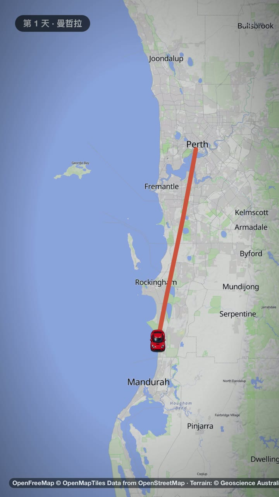
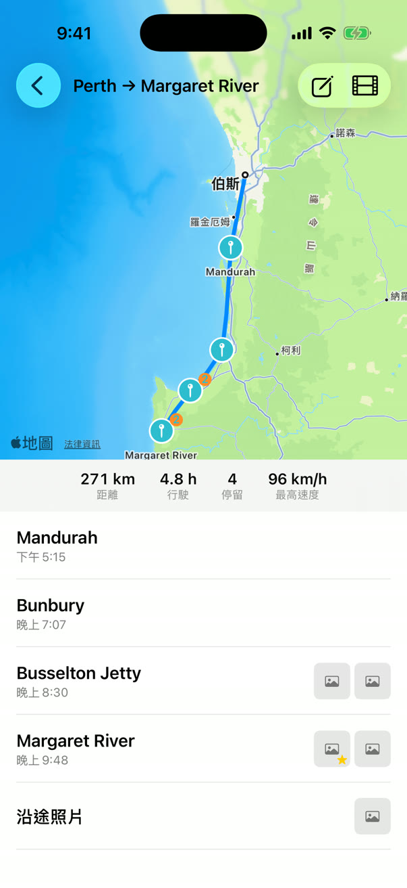
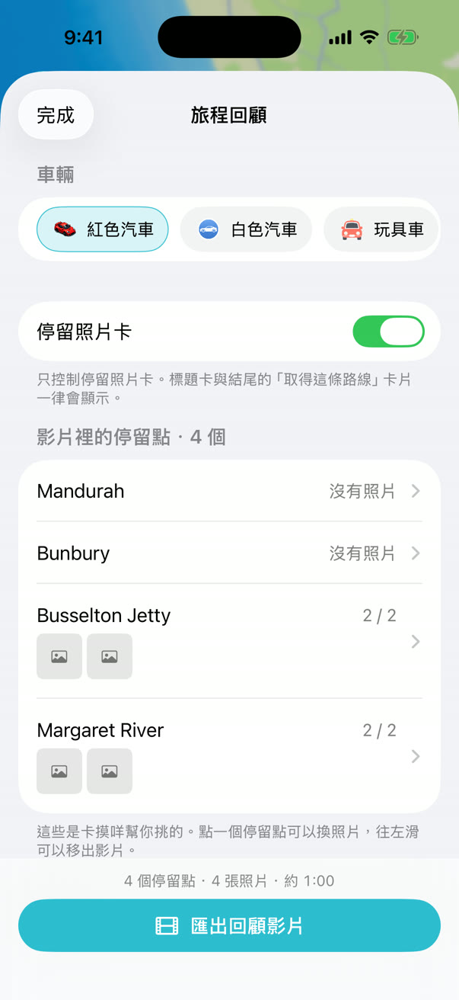

📷
從相片匯入旅程
卡摸咩讀取相片的拍攝時間與地點，把它們放回路線上的每個停留點，不必手動整理。
Places your photos on the route, stop by stop, from where and when they were taken.
公路旅行的回憶引擎 · A memory engine for road trips
匯入旅途中的相片，或邊開邊記錄路線。卡摸咩重建你走過的路，再把它剪成一部值得收藏、值得分享的回顧影片。
Import your trip photos or record the drive. Kamome rebuilds the road you took and cuts it into a recap film worth keeping.
Import once. Keep forever.
卡摸咩讀取相片的拍攝時間與地點，把它們放回路線上的每個停留點，不必手動整理。
Places your photos on the route, stop by stop, from where and when they were taken.
路線盡量貼著真正走過的道路；只是推測的路段，就誠實地畫成推測。
Routes follow real roads where they can, and a guess is always drawn as a guess.
挑一台車，地圖、路線與相片就編排成一部回顧影片，存到相簿或直接分享。
Pick a car, and the map, route and photos become a recap film to save or share.
出發時按下開始，卡摸咩在背景記錄路線，結束旅程的那一刻就停止。
Tap start and Kamome records the route in the background until you end the trip.
從整片大陸拉近到出發點，小車沿著路線一站一站開過去，停留點的相片一張張翻開。紅色汽車、白色汽車，或是玩具車，隨你挑。
From the whole continent down to the start line, a little car drives your route stop by stop while the photos from each place fan out. Red car, white car or toy car, your pick.

A first look · 測試版畫面，正式版可能不同 / Test build, may change before release


相片、旅程與影片都存在你的裝置上。沒有帳號、沒有廣告、沒有追蹤。為了畫地圖與比對道路而送出的資料，App 裡一條一條寫清楚。
Your photos, trips and films stay on your device. No accounts, no ads, no tracking, and the app tells you exactly what is sent and why.
閱讀隱私權政策 · Privacy Policy →News